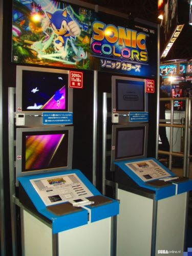

🏠 首頁
📁 未知版塊
TGS-SEGA攤位介紹（含Sonic Colors影像）
👤 RedFox
🕐 2010-09-17 10:13:00
Well...雖然是整個SEGA攤位的介紹
不過大家在意的還是Sonic Colors的部分吧？
如果版主覺得分類不妥的話，就麻煩搬動一下囉
Sonic Colors的部分從2:23秒部分開始
可以很清楚看到DS版的Special Stage
👤 binyi
🕐 2010-09-17 10:26:24
旁邊的機台在播主標題畫面前的動畫[:smile39:]開放的週六日就快到了，希望有新關卡可以試玩
順便
轉貼照片
一張

附件: tgs2010_11.jpg